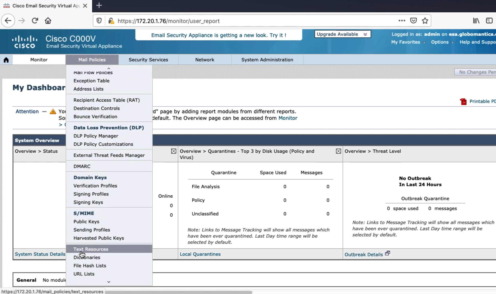
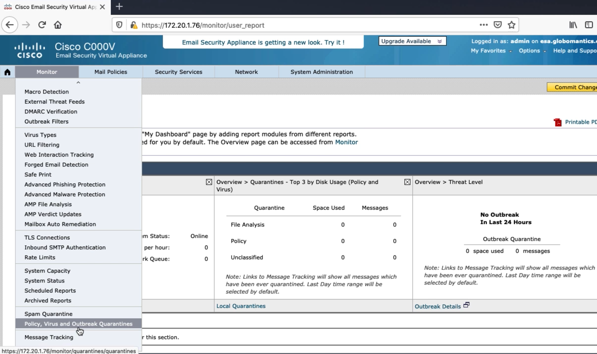
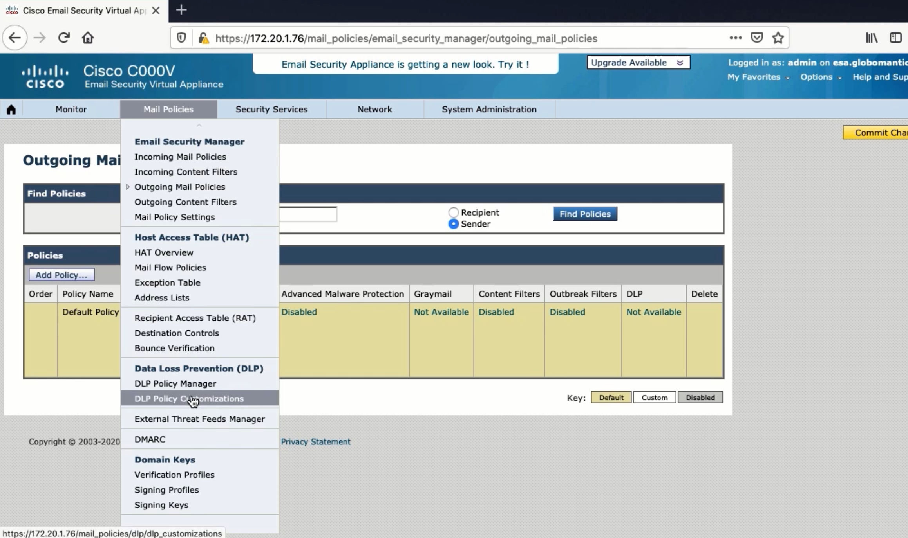
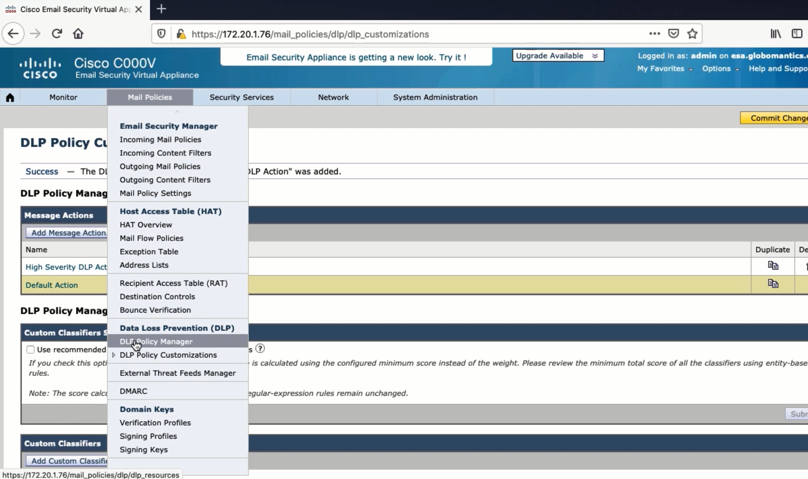
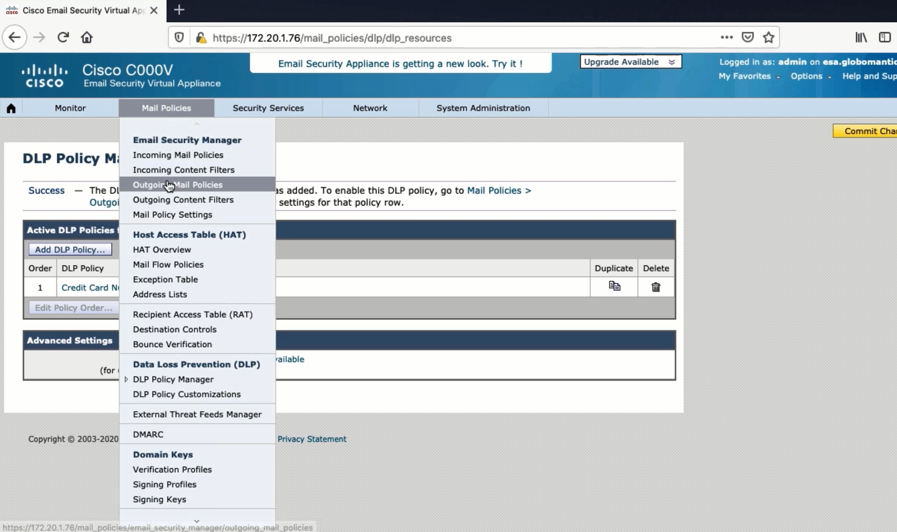
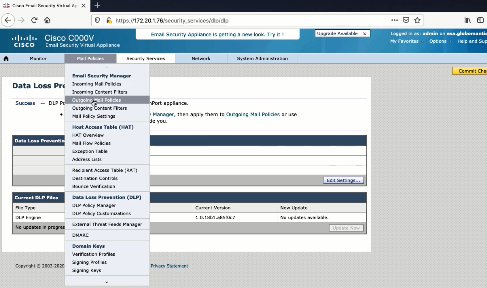

Configuring the Default Outgoing Mail Policy and Verifying¶
Text Resources¶

Quarantine¶

Data Loss Prevention¶
Unauthorized sensitive data doesn’t leave the network
IP, personal info, financial statements
Both malicious and unintentional
Scans outbound emails
Pre-built regular expressions and keywords
Looks at contents of email
Supporting info and proximity
Scores between and 100
Severity level
Action




Setting up an Email Server for Testing¶
Microsoft Server
MailEnable
AD Users and Computers, DNS, IIS
PS C:\Users\ Administrator> Import-Module ActiveDirectory
PS c:\Users Administrator> $User = Get-ADUser kinda -Properties proxyaddresses
PS C:\users Administrator> Suser-proxyAddresses-Add("SMTP:kinda@example.com")
PS C:\Users\Administrator» Set-ADUser -instance $user
PS c:\users \Administrator> Import-Module ActiveDirectory
Ps c:\Users\Administrator> $User = Get-ADUser brian -Properties proxyAddresses
PS c:\Users \Administrator» $User.proxyAddresses.Add("SMTP:brian@example.com")
PS c:\Users\Administrator> Set-ADUser -instance $User
PS c:\Users\Administrator>
Configuring an Email Client¶
Setting up mail client is self-explanatory
Make sure that DNS is flushed before your testing you start
esa.example.com> dnsflush
Are you sure you want to clear out the DNS cache? [N]> Y